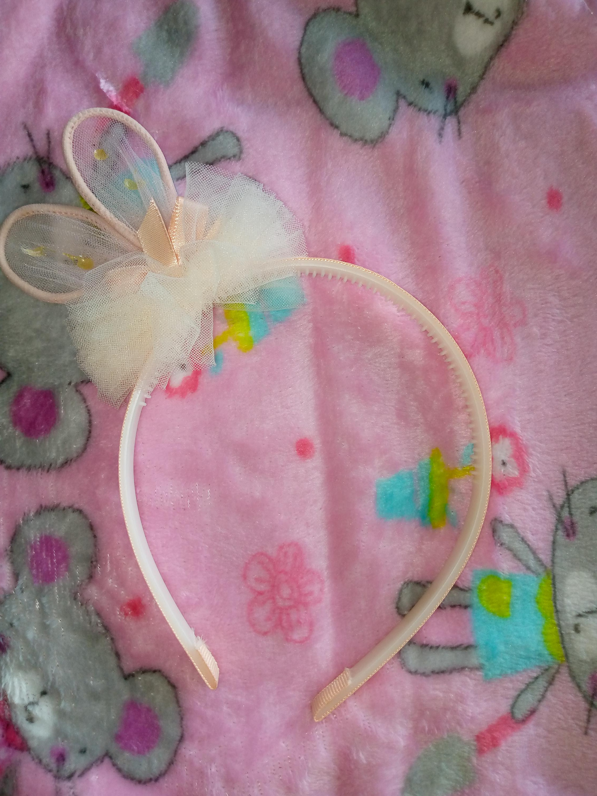

|
Hermosa balaca color rosa para niña, hecha en pasta. Con dos bolitas color rosa de decoración.
Precio:5.000 |
Balaca niña color blanca hecha en pasta. Con dos bolitas del mismo color de decoración.
Precio: 5.000 |
||
|
Balaca niña, hecha en pasta color blanca, poseedora de un moño color azul como decoración.
Precio: 5.000 |
Balaca niña hecha en pasta color azul, adornada con un tul y un detalle de corazón en lentejuela.
Precio: 5.000 |
||
|
Balaca niña hecha en pasta color rosada, adornada con un moño del mismo colorncon brillantina.
Precio: 5.000
|
|
Balaca niña hecha en pasta color pastel, con un tul color claro. en forma de rosa
Precio: 5.000 | |
|  |
Balaca niña hecha en pasta color blanca, decorada con un tul blnaco y una orejitas de conejo.
Precio: 5.000 |
Balaca niña hecha en pasta color rosa, adornada con un moño de tela brillante.
Precio: 5.000 |